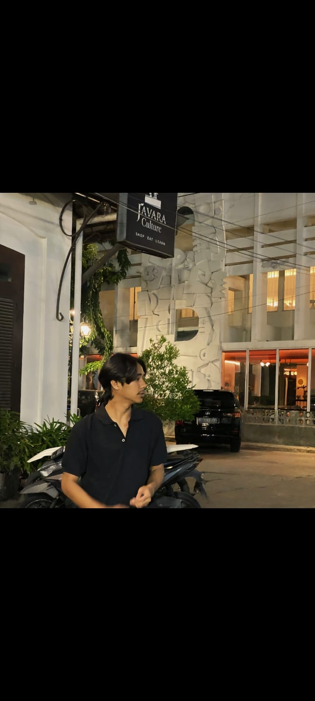

HALO, SAYA
Mahasiswa Teknik Komputer yang memiliki ketertarikan pada teknologi, pemrograman, dan pengembangan sistem.
Tentang Saya
Faris Farkhani
2405110024
Teknik Komputer
2024
Saya adalah mahasiswa Program Studi Teknik Komputer. Saya memiliki ketertarikan terhadap perkembangan teknologi dan bagaimana teknologi dapat digunakan untuk membantu menyelesaikan berbagai permasalahan.
Selama menjalani perkuliahan, saya mempelajari berbagai bidang yang berkaitan dengan teknologi, elektronika, pemrograman, dan sistem komputer.
Selain kegiatan perkuliahan, saya mengisi waktu dengan mempelajari teknologi dan mencoba membuat berbagai proyek sederhana.
Beberapa kegiatan yang saya lakukan antara lain belajar pemrograman, membuat proyek Arduino, mempelajari website, serta mencoba memahami teknologi baru.
Saya memiliki cita-cita untuk menjadi seseorang yang mampu menguasai teknologi dan dapat membuat solusi yang bermanfaat bagi masyarakat.
Saya ingin terus mengembangkan kemampuan dan pengalaman agar dapat bekerja di bidang teknologi sesuai dengan kemampuan yang saya miliki.
Bidang IT yang ingin saya kuasai adalah pemrograman, pengembangan website, Internet of Things atau IoT, serta pengembangan sistem berbasis teknologi.
Mempelajari HTML, CSS, PHP, dan teknologi pengembangan website.
Mempelajari Arduino, sensor, mikrokontroler, dan komunikasi antarperangkat.
Mempelajari logika pemrograman dan pembuatan aplikasi sederhana.